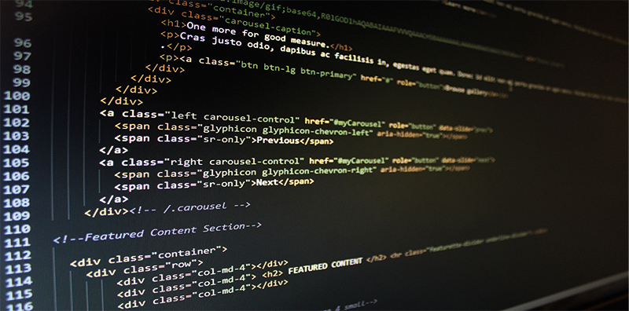

By Wintec
Creative. That's who you are. Your art matters and it deserves to be seen. It’s that intensity of emotion that keeps
you at it. Because this is a world where success is not measured simply by how much money you earn, but by your
ability to merge work, play and talent into one fantastic lifestyle. It starts right here with us.You’ll be part of a creative community, inspired by the people around you and working with students from every
discipline in Creative Industries to bring your ideas alive.

By Wintec
Now is the time to turn your creativity into a career! In the world of creative arts and industries, you will be challenged,
inspired, frustrated, and rewarded...sometimes all at once! Your art matters and it can change the world. Who will you
become?Your tutors are active researchers and experienced designers. They regularly exhibit, present at conferences and are
members of professional organisations relating to design.
By Wintec
Spark International Festival of Music, Media, Arts & Design, is an annual celebration of contemporary arts, media,
music and design bringing together creative minds from NZ and around the globe.Our annual Spark Festival is a free
opportunity to hear day-in-the-life stories from leading national and international creative practitioners.Ramp Gallery presents regular exhibitions and talks by a range of contemporary artists.